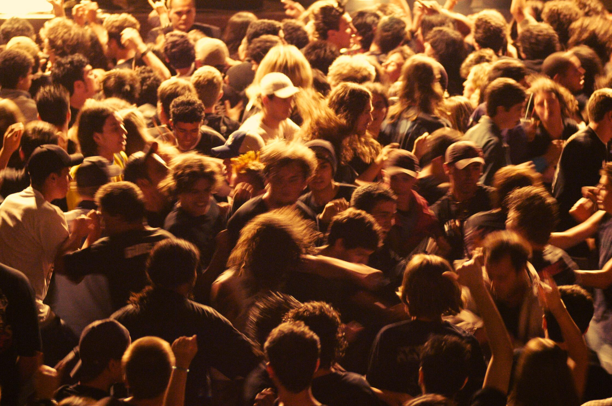
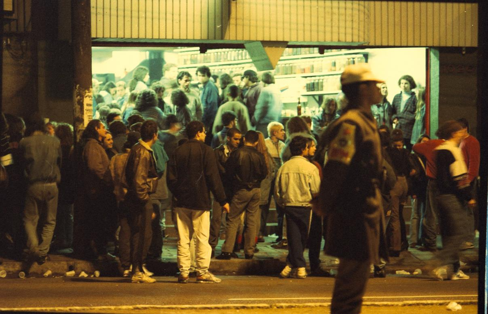
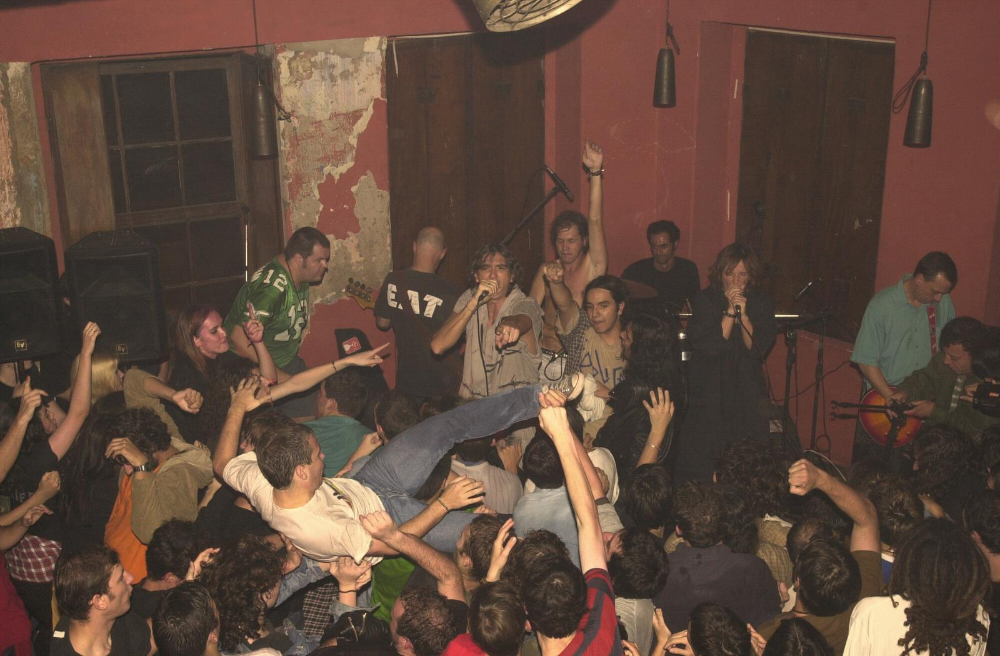
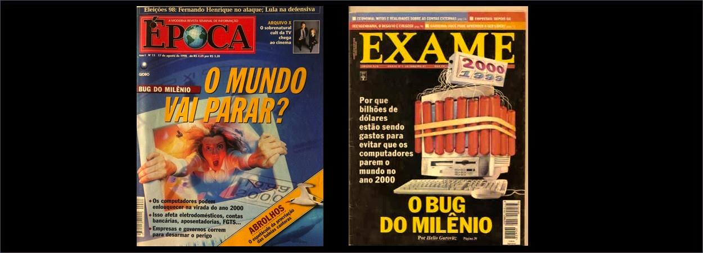
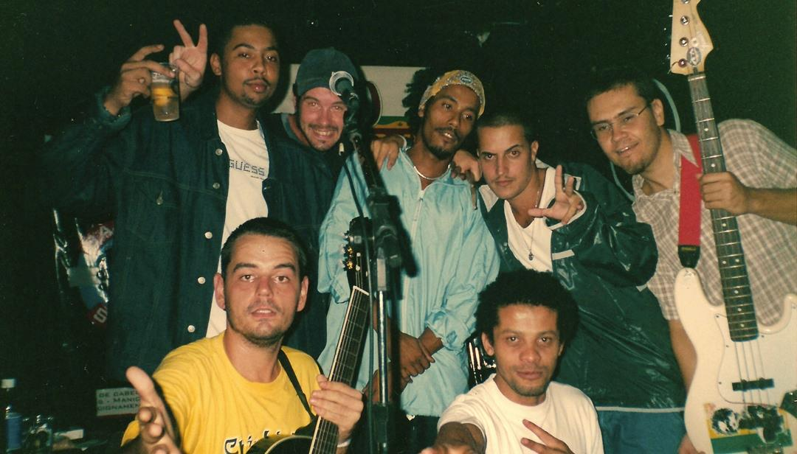
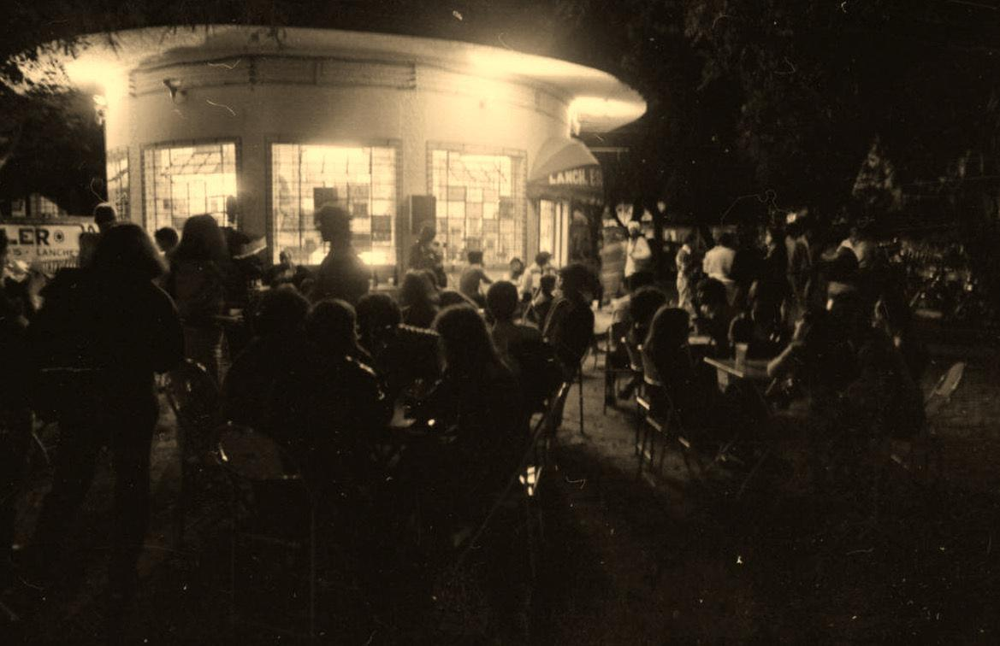
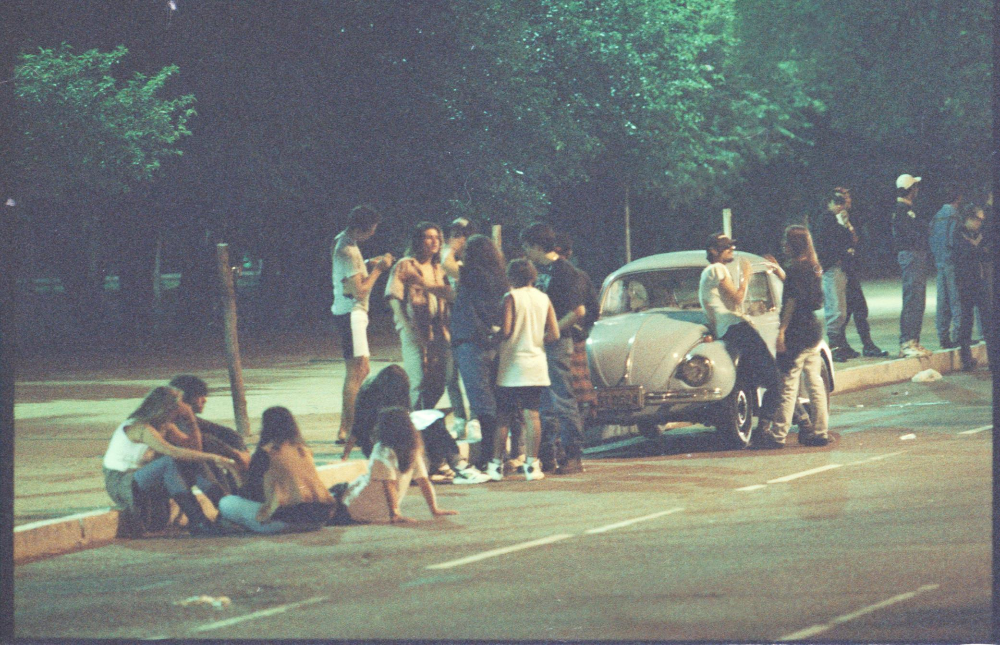
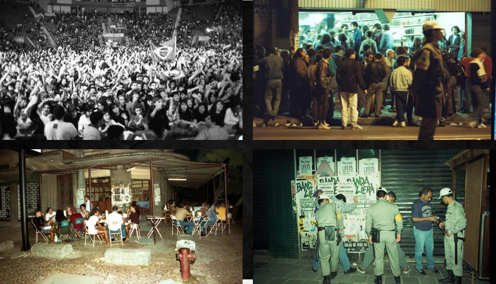
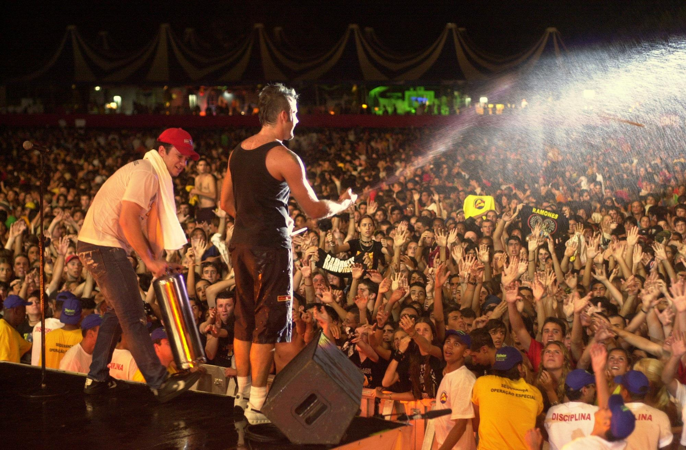
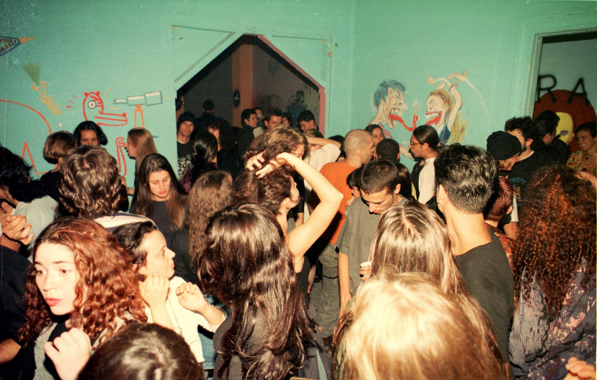

Entre o fim dos anos 90 e o início dos anos 2000, Porto Alegre fervia. Enquanto o mundo esperava a virada do milênio, a cidade era tomada por uma efervescência musical que definiria o som e o comportamento de uma geração.
Rock do Milênio nos coloca dentro desse período: imagens de arquivo inéditas e registros de backstage feitos na época. Além disso, depoimentos de quem viveu cada noite nos levam para o centro de um movimento que ocupava espaços como Opinião, Ocidente, Garagem Hermética, entre outros.
Conectando diferentes histórias e vivências, o comunicador Lelê Bortholacci surge como um narrador entre tempos, espaços e pessoas — a partir das bandas que produziu e que influenciaram sua trajetória, direta ou indiretamente.
Escolhemos focar na cena do rock de Porto Alegre nesse período para garantir mais profundidade: a cidade se consolidou como o principal polo do rock gaúcho, e nomes como Cachorro Grande, Bidê ou Balde e Ultramen ajudam a contar essa história com coesão.
Uma TV de tubo exibe uma entrevista de alguém preocupado com a virada do milênio.
Travelling out: ao lado da TV está um aparelho de som. Uma mão liga o aparelho, que toca rock gaúcho.
A TV sofre interferência. Lelê bate na TV. Bate novamente. O rock aumenta de volume, a imagem volta e vemos arquivos mais frenéticos do final dos anos 90 e início dos 2000 — rock, cultura, shows, acontecimentos.
Inicia narração de Lelê.

O cenário que antecede o rock do milênio, conectando as influências musicais dos anos 80 e 90 às vivências de quem começava a se aproximar da música — e o comportamento de uma geração millennial que via uma nova cena surgir na cidade.

Consolidação da cena: Comunidade, Acústicos, Tequila, Ultramen e Bidê ou Balde. Os arquivos pessoais de Lelê guiam a trajetória das bandas dentro e fora dos palcos.

O choque geracional dentro da cena: mudanças tecnológicas, a chegada da internet, novos estilos e os desafios de se manter relevante — colocando em diálogo as bandas dos episódios anteriores.

Vera Loca, Cachorro Grande, Reação em Cadeia e Fresno. Em paralelo, um mundo cada vez mais globalizado começa a influenciar comportamentos e referências, apontando para uma mudança iminente.

A cena local de Porto Alegre: bares, estúdios e points da cidade. Depoimentos de donos de estabelecimentos marcantes — Garagem Hermética, Bafo de Bira, Ocidente, Bar do João.

O legado do rock do milênio e os novos nomes que ele revelou. Bandas e personagens revisitam os "picos" que marcaram a cena — e Lelê reflete sobre o que fica, o que muda, e o que continua vivo.

O movimento estará presente ao longo de todo o documentário — seja por meio das câmeras ou dos personagens. Os depoimentos acontecem em diferentes lugares da cidade: casas de show, rádios, estúdios, ruas, lojas de discos. Cada personagem ocupa um espaço com significado na história, como se a cidade fosse extensão de sua memória. A estética mescla captação em alta definição, efeitos analógicos e arquivos de época — a ideia é transportar o olhar através do tempo.

